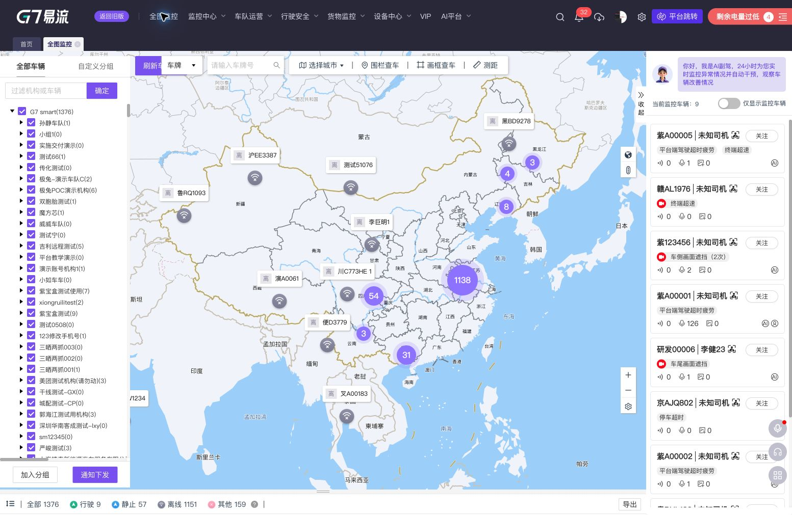

TC01 · 全图监控首屏与地图数据加载
PASS
测试目标
验证进入全图监控后，地图、车辆树、状态统计和右侧监控面板能够完成加载。
前置条件
用户已成功登录 G7S。
步骤
- 从首页进入“全图监控”。
- 等待地图及车辆数据完成加载。
- 检查地图标记、车辆树、状态计数和 AI 副驾监控列表。
预期与实际
页面标题为“全图监控”；地图出现车辆点位与聚合点；车辆树显示 1,376 辆；底部展示全部、行驶、静止、离线、其他状态统计；右侧监控列表正常显示。实际结果符合预期。
